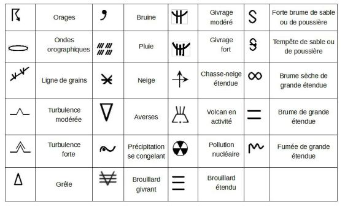
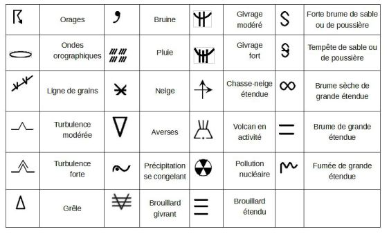
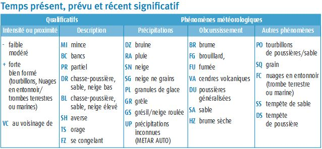
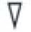

Météo CATT
METAR --> observation régulière pour l'aviation diffusé toutes les heures ou toutes les demi-heures pour les gros aéroports.

 Le METAR peut contenir une partie de prévision TEMPO (temporairement) --> tendance de prévision d'atterrissage valable pour les deux heures qui suivent l'observation.
TAF (prévision) court : tous les 3h valable 9h ; TAF long tous les 6h valable 24h ou 30h
Le METAR peut contenir une partie de prévision TEMPO (temporairement) --> tendance de prévision d'atterrissage valable pour les deux heures qui suivent l'observation.
TAF (prévision) court : tous les 3h valable 9h ; TAF long tous les 6h valable 24h ou 30h
Symboles TEMSI (TEMps SIgnificatif)
 
Nuage lenticulaire (1) associé à une onde relief ;

Nuage lenticulaire (1) associé à une onde relief ;
(3) un nuage à caractère de nuage lenticulaire mais mélangé à des nuages de types stratus ou altocumulus
 1 cumulonimbus - 2 stratus accrochés au relief - 3 cirrostratus - 4 altocumulus lenticularis (un altocumulus qu’on retrouve en aval du sommet des montagnes sous le vent).
1 cumulonimbus - 2 stratus accrochés au relief - 3 cirrostratus - 4 altocumulus lenticularis (un altocumulus qu’on retrouve en aval du sommet des montagnes sous le vent).

Météorologie
Le nuage qui indique la présence de courants verticaux importants à proximité du sol est
Le Cumulus.
Une nébulosité de 5 à 7 octas est indiquée dans un METAR par l'abréviation :
BKN. FEW : nuages rare 1 à 2 octas.
SCT : nuages épars c'est 3 à 4 octas.
BKN : nuages fragmentés 5 à 7 octas.
OVC : ciel couvert 8 octas.
Le code NSC :
Indique qu'il n'y a pas de nuages significatifs. NSC (No Significant Clouds) : nuages non significatifs.
Dans un METAR, le codage suivant '8000 3000SW BR' signifie :
Visibilité dominante de 8000 m et minimale de 3000 m dans le Sud-Ouest avec de la brume.
'BECMG FM 1100 -SHRA' dans un METAR signifie
Deviendra, à partir de 11h UTC, averses de pluie faibles. BECMG FM (BECOMING FROM) : devenant à partir de 11h.
Vous prenez connaissance du METAR de Troyes :LFQB 100900Z 31006KT 6000 NSC M00/M01 Q1035= Vous observez la présence d'un important groupe d'oiseaux dans la géographie de vol
Vous attendez que la situation s'améliore pour débuter vos évolutions.
Le code météorologique 'FZDZ' indique :
Bruine se congelant modérée.
Le code météorologiques '+SHRA' indique
Forte averse de pluie. 
Dans un METAR, la présence de brume (BR) indique une visibilité comprise entre :
1 km et 5 km.
La circulation du vent sur le relief va générer de la :
Turbulence de frottement.
Dans un message METAR, le terme 'VC' signifie :
Au voisinage. situé entre environ 8 et 16 km par rapport au point de référence d'un aérodrome
L'unité de mesure de la pression de l'air dans le système international est...
Le Pascal (Pa). 1 Pa = 1 N/m²
Identifiez le type de nuage qui vous signalera une forte possibilité que l'air est instable :
Le Cumulonimbus.
«Message spécial d'aérodrome, émis quand un changement significatif des conditions météorologiques a été observé».
SPECI.
A une hauteur de 100 mètres vous pouvez estimer que la vitesse du vent est :
50% plus fort qu'au sol.
Dans un METAR, la présence de brouillard (FG) indique une visibilité :
Inférieure à 1 km.
Vous prenez connaissance du METAR de Toulouse Blagnac :LFBO 060800Z 29010KT 9999 SCT016 BKN050 19/16 Q1019 NOSIG=Les nuages qui sont l'objet du code SCT016 couvrent :
Moins de la moitié du ciel et leur base est à 1600 ft.
Indiquer les conditions pour lesquelles les performances d'un aéronef sans équipage à bord seront les meilleures :
Par temps froid, à proximité du niveau de la mer et avec une pression atmosphérique élevée.
Que représente ce symbole sur une carte de temps significatif ?
Averse. 
Vous prenez connaissance du TAF de Rodez Marcillac: LFCR 140800Z 1409/1418 25008KT 4000 RADZ OVC002 BKN025 OVC250 TEMPO 1409/1412 1500 DZRA OVC002 BKN020 BECMG 1412/1415 28006KT BKN020 SCT050 BECMG 1415/1418 SCT020 SCT050
Le code TEMPO indique une chute de la visibilité à 1500 m :
Entre 9 h à 12 h UTC.
Le givrage :
Se forme sur les ailes et rotors, entrainant une diminution progressive des performance de l'appareil.
La turbulence thermique dépend : 1 - de l'environnement 2 - des contrastes du sol 3 - du degré d'instabilité de l'air 4 - de la compétence du pilote à distance
1 - 2 - 3.
titre
titre
titre
titre